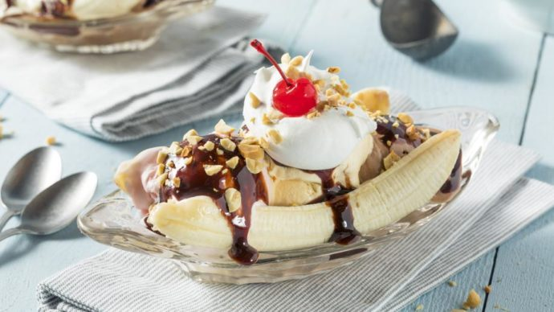

bananasplit
dit is het recept van een bananasplit dit is vooral lekker na een stuk gehaktbrood. Ik zou deze soep serveren na dat je gehaktbrood hebt gegeten
ingredienten
- 50 g boter
- 3 eetlepels vloeibare bloemenhoning
- 50 g ongezouten gemende noten
- 4 bananen
- 1/2 liter vanilleijs
- 2 eetlepels slagroom
bereidingswijze
In steelpan boter smelten. Honing erdoor roeren. Noten grof hakken en door boter-honingmengsel scheppen. Geheel ca. 2 minuten zachtjes verwarmen. Bananen in de lengte doormidden snijden en op vier borden een banaanhelft leggen. IJs op banaan leggen en andere banaanhelft erop leggen. Slagroom door notensaus mengen. Warme saus over ijs en bananen schenken.

goed bijpassende recepten
gehaktbrood
uiensoep